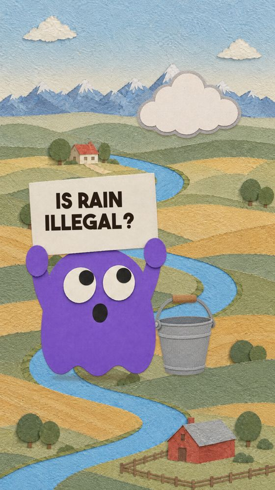

Is Rainwater Collection Illegal?

▶ Watch the ShortThe answer
In Colorado, mostly yes, until 2016. Water law says rain already belongs to downstream rights holders. Now you can keep two barrels, 110 gallons, outdoor use only.
Sources (4)
- Colorado HB16-1005, "Residential Precipitation Collection": signed 12 May 2016, effective 10 Aug 2016; up to 2 rain barrels, 110 gal combined; rooftop water used outdoors on the same property; single-family homes and multi-family buildings of 4 units or fewer. https://leg.colorado.gov/bills/hb16-1005
- CSU Extension, "Rainwater collection in Colorado": before HB16-1005, collection was "not permitted except under specific circumstances"; collection still creates no water right, and the State Engineer can curtail barrels if a senior right holder is injured. https://extension.colostate.edu/resource/rainwater-collection-in-colorado
- Prior appropriation ("first in time, first in right") is written into the Colorado Constitution of 1876, Art. XVI §6. The oldest right still in use, the San Luis People's Ditch, holds Priority No. 1 dated 10 April 1852 (decreed 1890) → "some going back to the 1800s" holds. https://www.hmdb.org/m.asp?m=293699
- Nuance: since 2009 (SB09-080) some rural homes on exempt wells could get a rooftop-collection permit.
Spotted a mistake? Email hello@fairquestionlab.com and we'll check it.